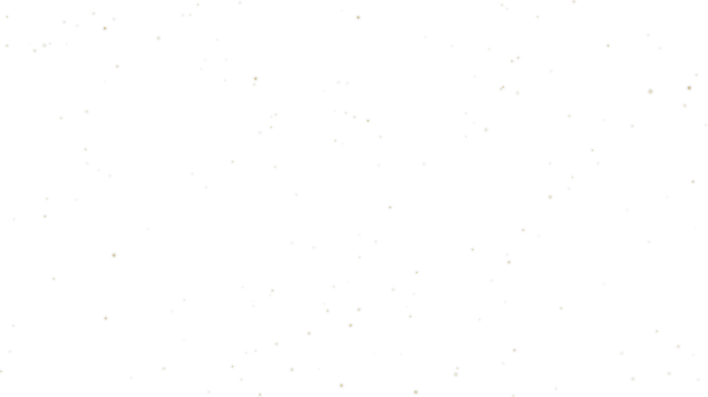
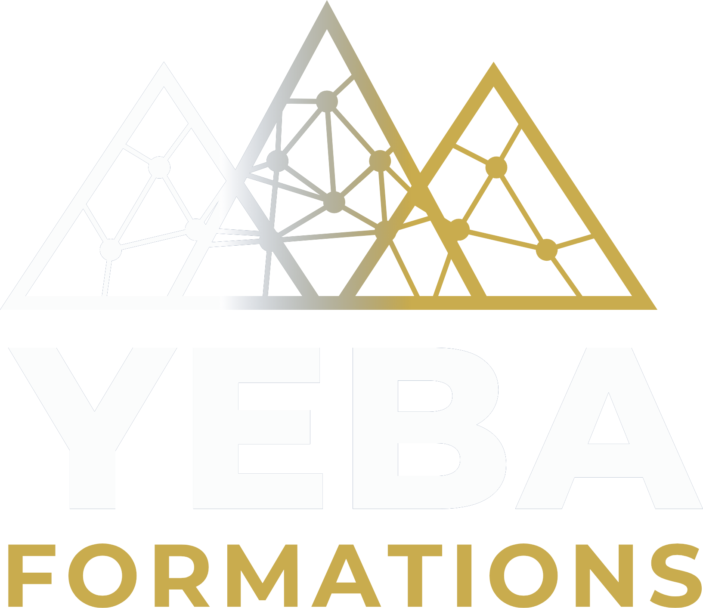
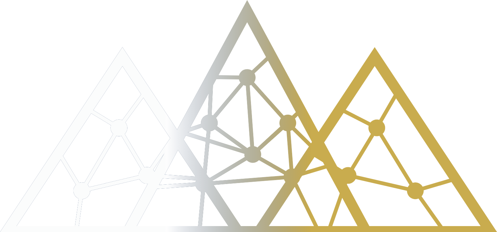
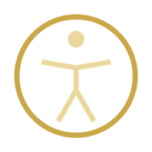

SAISON 1 · SOIRÉE DE LANCEMENT
[DATE À PRÉCISER] · [LIEU À PRÉCISER] · La Réunion
CE SOIR

Pas de mot pour « formation ».
Alors maman a dit : Ko yeba. Le savoir.
« Savoir, connaître » — en lingala
Histoires · Vérités · Générations
HÉRITAGE
Afrique
Baobab
Transmission
MODERNITÉ
IA
Réseau
Pitons 974
QUESTION
UNE JOURNÉE YEBA
de formation par jour
FormationDéjeunerFormation08h3012h0013h0016h30Inscription : 15 jours ouvrés avant

Référent handicapparcours adaptésNOTRE LIGNE
NOTRE PROMESSE
NOTRE MÉTHODE
PROCHAINEMENT
ET MAINTENANT